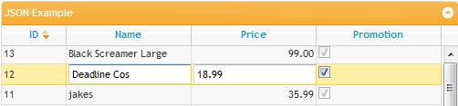
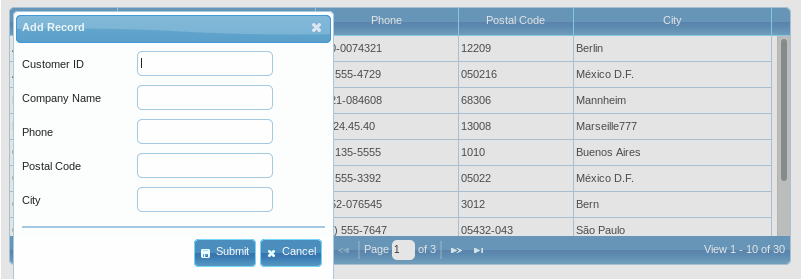
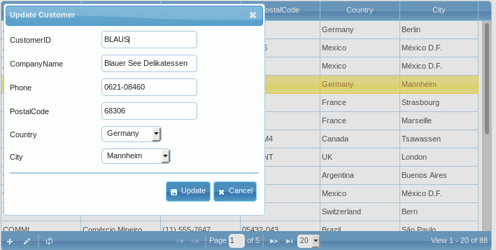

Editing¶
One of the key reasons for displaying data in a grid is to edit it, quickly and easily.
Common editing properties¶
jqGrid supports editing data in three ways:
- Cell editing : edit specific cells in a gird
- Inline editing : edit several cells in the same row
- Form editing : create a form to edit outside of the grid
Developer information¶
All of editing methods are written in separate modules which are: grid.celledit.js for Cell editing, grid.inlinedit.js for Inline editing and grid.formedit.js for Form editing. All of these modules use the common module grid.common.js.
Options and Description¶
All editing modules uses a common properties in colModel in order to perform editing. Below is the list of these properties with detailed description:
- editable
- edittype
- editoptions
- editrules
- formoptions (valid only in form editing)
The common syntax of using these options is:
<script> jQuery("#grid_id").jqGrid({ ... colModel: [ ... { name:'price', ..., editable:true, edittype:'text', editoptions:{...}, editrules:{...}, formoptions:{...} ... }, ... ] ... }); </script>
For all other specific options and events refer to the appropriate module.
Note
For every editable element jqGrid construct different name and id which are specific for every module. Refer to the appropriate module on how these are constructed
editable¶
The editable option is a boolean and can have a value of true or false. The option defines whether this field is editable (or not). Default is false. To make a field editable, set this option to true: editable:true.
We should mention that hidden fields are not editable; instead that they have been marked as editable. In the in-line and cell editing modules you should show these fields (using the showCol method) in order to edit it. In the form editing module you should use the certain editrules option (see below).
edittype¶
Edittype option defines the type of of the editable field. Possible values are: 'text', 'textarea', 'select', 'checkbox', 'password', 'button', 'image', 'file' and 'custom'. The default value is 'text'. Below is the description of these types:
text
When edittype is 'text', jqGrid constructs a input tag of type text:
<input type="text" ...../>
In editoptions we can set all the possible attributes for this field. For example,
... editoptions: {size:10, maxlength: 15}
will cause jqGrid to construct the following input
<input type="text" size="10" maxlength="15" />
In addition to the these settings, jqGrid adds the id and name attribute.
textarea
When edittype is 'textarea', jqGrid constructs a input tag of type textarea
<input type="textarea" .../>
In editoptions we can add additional attributes to this type. Typically, these govern the size of the box:
... editoptions: {rows:"2",cols:"10"}
<input type="textarea" rows="2" cols="10".../>
To these attributes jqGrid adds id and name attributes .
If the rows and cols attributes are not set jqGrid set defaults to rows =2, cols = 20
checkbox
When edittype is 'checkbox', jqGrid constructs a input tag as follows:
<input type="checkbox" .../>
editoptions is used to define the checked and unchecked values. The first value is checked. For example
...editoptions: { value:"Yes:No" }
This will construct
<input type="checkbox" value="Yes" offval="No".../>
defines a checkbox; when the value is Yes, the checkbox becomes checked, otherwise it is unchecked. This value is passed as a parameter to the editurl.
If in editoptions, the value property is not set, jqGrid searches for the following values (false|0|no|off|undefined) in order to construct the checkbox. If the cell content does not contain one of these values, then the value attribute becomes the cell content and offval is set to off.
Example if the cell content is true, then
<input type="checkbox" value="true" offval="off" checked.../>
To these attributes jqGrid adds id and name attributes.
select
When edittype is 'select', jqGrid constructs a input tag as follows:
<select> <option value='val1'> Value1 </option> <option value='val2'> Value2 </option> ... <option value='valn'> ValueN </option> </select>
To construct this element we have three possible variants:
- Setting the editoptions value as string The editoptions value must contain a set of value:label pairs with the value separated from the label with a colon (:) and ended with(;). Whichever you use, something like the following
editoptions: { value: "FE:FedEx; IN:InTime; TN:TNT" }
will construct
<select> <option value='FE'> FedEx </option> <option value='IN'> InTime </option> <option value='TN'> TNT </option> </select>
Note the last element in the string - it should not end with ;
- Setting the editoptions value as object
In this case the editoptions value must contain an array {} with name:value properties separated by a comma. Below is an example:
... colModel : [ ... {name:'myname', edittype:'select', editoptions:{value:{1:'One',2:'Two'}} }, ... ] ...
This will construct an HTML select
<select> <option value='1'>One</option> <option value='2'>Two</option> </select>
- Setting the editoptions dataUrl parameter The editoptions dataUrl parameter is valid only for element of edittype:select. The dataUrl parameter represent the url from where the html select element should be get. When this option is set, the element will be filled with values from the AJAX request. The data should be a valid HTML select element with the desired options - something like:
<select> <option value='1'>One</option> <option value='2'>Two</option> ... </select>
To this element, jqGrid adds the id and name attributes as above.
Multiple selection of options in a select box is also possible. A size attribute may be added as well
...editoptions: {multiple : true, size : 4... }
If not set the default size attribute is 3 when multiple is true.
password
When edittype is 'password', jqGrid constructs a input tag of type text:
<input type="password" ...../>
In editoptions we can set all the possible attributes for this field. For example,
... editoptions: {size:10, maxlength: 8}
will cause jqGrid to construct the following input
<input type="password" size="10" maxlength="8" />
In addition to the these settings, jqGrid adds the id and name attribute.
button
When edittype is 'button', jqGrid constructs a input tag of type text:
<input type="button" ...../>
In editoptions we can set all the possible attributes for this field. For example,
... editoptions: {value:'MyButton'}
will cause jqGrid to construct the following input
<input type="button" value="MyButton" />
In addition to the these settings, jqGrid adds the id and name attribute.
image
When edittype is 'image', jqGrid constructs a input tag of type text:
<input type="image" ...../>
In editoptions we can set all the possible attributes for this field. For example,
... editoptions: {src:'path_to_my_image'}
will cause jqGrid to construct the following input
<input type="image" src="path_to_my_image" />
In addition to the these settings, jqGrid adds the id and name attribute.
file
When edittype is 'file', jqGrid constructs a input tag of type text:
<input type="file" ...../>
In editoptions we can set all the possible attributes for this field. For example,
... editoptions: {alt:'Alt text'}
will cause jqGrid to construct the following input
<input type="file" alt="Alt text"... />
In addition to the these settings, jqGrid adds the id and name attribute.
Warning
When this element is created (usually in form editing) the form does not become enctype="multipart/form-data" in order to upload the file. You should apply another plugin for this purpose - Ajax File Upload plugin works fine or set a form property enctype using some events like beforeInitData.
custom
This edit type allows definition of a custom editable element. When the edit type is set to custom we should provide a set of two functions, one which creates the element, and one that gets and sets the value from in form in order to be posted to the server.
The functions that should be defined are custom_element and custom_value. See the editoptions below for more details
When the custom element is created we automatically do the following additinal tasks:
- add a class 'customelement' to the element
- add attribute name with name from colModel
- add id according to the rules for every edited module.
The example above will create element input type text:
<script> function myelem (value, options) { var el = document.createElement("input"); el.type="text"; el.value = value; return el; } function myvalue(elem, operation, value) { if(operation === 'get') { return $(elem).val(); } else if(operation === 'set') { $('input',elem).val(value); } } jQuery("#grid_id").jqGrid({ ... colModel: [ ... { name:'price', ..., editable:true, edittype:'custom', editoptions: { custom_element: myelem, custom_value:myvalue } }, ... ] ... }); </script>
editoptions¶
The editoptions property is an array which contains information about the editing column. It is important to note that in the editoptions array you may set any valid attribute for the chosen edittype.
The editoptions property is used in the colModel array and the syntax is:
<script> jQuery("#grid_id").jqGrid({ ... colModel: [ ... {name:'price', ..., editoptions:{name1:value1...}, editable:true }, ... ] ... }); </script>
i.e. in name:value pair. Below is the list of the most commonly used options:
| Property | Type | Description |
|---|---|---|
| buildSelect | function | This option is relevant only if the dataUrl parameter is set. When the server response can not build the select element, you can use your own function to build the select. The function should return a string containing the select and options value(s) as described in dataUrl option. Parameter passed to this function is the server response |
| cacheUrlData | boolean | When set to true prevent multiple ajax calls when input select is build-ed using the dataUrl (see below). In this case the data is loaded only once. Default false. |
| custom_element | function | Used only if the edittype option is set to 'custom'. This function is used to create the element. The function should return the new DOM element. Parameters passed to this function are the value and the editoptions from colModel |
| custom_value | function | Used only if the edittype option is set to 'custom'. This function should return the value from the element after the editing in order to post it to the server. Parameter passed to this function is the element object and the operation type In inline and cell editing modules this parameters is always a string value - 'get'. See below for the other type. In form editing this function has a different behavior. In this case we pass additional third parameter - the value. When a values of the custom element is posted to the server the second parameter has a value 'get'. In this case the function should return a value. If no values is returned in this case a error is raised. In case the data is read from the grid in order to set it in the form the operation parameter has a value 'set' and the grid value is passed as a third parameter. This way we can modify the grid value before it is displayed in the form. See the example above. |
| dataEvents | array | list of events to apply to the data element; uses $("#id").on(type, [data], fn) to bind events to data element. Should be described like this:editoptions: { dataEvents: [{type: 'click', data: { i: 7 }, fn: function(e) { console.log(e.data.i); }}, {type: 'keypress', fn: function(e) { console.log('keypress'); } }]} |
| dataInit | function | We pass the element object to this function, if defined. This function is called only once when the element is created. Example : ...editoptions: { dataInit : function (elem) { $(elem).autocomplete(); } }. The event is called only once when the element is created. In the inline edit or the cell edit module it is called every time when you edit a new row or cell. In the form edit module every time if the same option is set to true since the form is recreated every time. |
| dataUrl | string | This option is valid only for elements of type select - i.e., edittype:select and should be the URL to get the AJAX data for the select element. The data is obtained via an AJAX call and should be a valid HTML select element with the desired options <select><option value='1'>One</option>...</select>``. You can use option group. The AJAX request is called only once when the element is created. In the inline edit or the cell edit module or form edit module it is called every time when you edit a new row or cell or launch the form. To cache the data use cacheDataUrl option - see above. <br/> The ajax options when dataUrl is used can be overwritten using the grid parameter _ajaxSelectOptions_. When the ajax call is made to the server is posted a object (data parameter) which contain the editoptions plus the { id: 'dynamic_id', name : 'name_from_colModel', rowId : 'id_of_the_row', oper : 'edit'} |
| defaultValue | mixed | The option can be string or function. This option is valid only in Form Editing module when used with editGridRow method in add mode. If defined the input element is set with this value if only element is empty. If used in selects the text should be provided and not the key. Also when a function is used the function should return value. |
| delimiter | string | Used when edittype : ' select' and the value option is a string. Delimit the different key:value pair in the string. The default option is ";" |
| NullIfEmpty | boolean | If set to true a string 'null' is send to the server when the data in that field is empty |
| separator | string | Used when edittype : 'select' and the value option is a string. Separate the key and value of the key:value pair. Default value is ":" |
| value | mixed | When set for edittype checkbox this value should be a string with two possible values separated with a colon (:) - Example editoptions:{value:"Yes:No"}, where the first value determines the checked property. When set for edittype select value can be a string, object or function. If the option is a string it must contain a set of value:label pairs with the value separated from the label with a colon (:) and ended with(;). The string should not ended with a (;)- editoptions:{value:"1:One;2:Two"}. If set as object it should be defined as pair name:value - editoptions:{value:{1:'One';2:'Two'}}. When defined as function - the function should return either formatted string or object. In all other cases this is the value of the input element if defined. |
| other options | mixed | In this case you can set any other valid attribute for the editable element. For example, if the element is edittype:'text', we can set size, maxlength, etc. attributes. Refer to the valid attributes for the element |
editrules¶
This option add additional properties to the editable element and should be used in colModel. Mostly it is used to validate the user input before submitting the value(s) to the server. Syntax:
<script> jQuery("#grid_id").jqGrid({ ... colModel: [ ... {name:'price', ..., editrules:{edithidden:true, required:true....}, editable:true }, ... ] ... }); </script>
All error messages are located into the language file of edit.msg property. Bellow is the English part of the messages:
$.jgrid.regional["en"] = { ... edit : { addCaption: "Add Record", ... msg: { required:"Field is required", number:"Please, enter valid number", minValue:"value must be greater than or equal to ", maxValue:"value must be less than or equal to", email: "is not a valid e-mail", integer: "Please, enter valid integer value", date: "Please, enter valid date value", url: "is not a valid URL. Prefix required ('http://' or 'https://')", nodefined : " is not defined!", novalue : " return value is required!", customarray : "Custom function should return array!", customfcheck : "Custom function should be present in case of custom checking!" } }, ... }
These messages can not be overwritten dynamically.
Below is the list of available options:
| Property | Type | Description |
|---|---|---|
| custom | boolean | if set to true allow definition of the custom checking rules via a custom function. See below |
| custom_func | function | this function should be used when a custom option is set to true. Parameters passed to this function are the value, which should be checked and the name - the property from colModel. The function should return array with the following parameters: first parameter - true or false. The value of true mean that the checking is successful false otherwise; the second parameter have sense only if the first value is false and represent the error message which will be displayed to the user. Typically this can look like this [false,"Please enter valid value"] |
| edithidden | boolean | This option is valid only in form editing/view module. By default the hidden fields are not editable or viewable (in viewGridRow method). If the field is hidden in the grid and edithidden is set to true, the field can be edited or viewed when add, edit or view methods are called. |
| date | boolean | if set to true a value from datefmt option is get (if not set ISO date is used) and the value will be checked and if this is not valid date, an error message will be displayed |
| boolean | if set to true, the value will be checked and if this is not valid e-mail, an error message will be displayed | |
| integer | boolean | (true or false) if set to true, the value will be checked and if this is not a integer, an error message will be displayed. |
| maxValue | number(integer) | if set, the value will be checked and if the value is more than this, an error message will be displayed. |
| minValue | number(integer) | if set, the value will be checked and if the value is less than this, an error message will be displayed. |
| number | boolean | (true or false) if set to true, the value will be checked and if this is not a number, an error message will be displayed. |
| required | boolean | (true or false) if set to true, the value will be checked and if empty, an error message will be displayed. |
| time | boolean | if set to true, the value will be checked and if this is not valid time, an error message will be displayed. Currently we support only hh:mm format and optional am/pm at the end |
| url | boolean | if set to true, the value will be checked and if this is not valid url, an error message will be displayed |
Below is example of using custom checking.
<script> function mypricecheck(value, colname) { if (value < 0 || value >20) return [false,"Please enter value between 0 and 20"]; else return [true,""]; } jQuery("#grid_id").jqGrid({ ... colModel: [ ... {name:'price', ..., editrules:{custom:true, custom_func:mypricecheck....}, editable:true }, ... ] ... }); </script>
formoptions¶
This option is valid only in form editing. The purpose of these options is to reorder the elements in the form and to add some information before and after the editing element. Should be used in colModel array. Syntax:
<script> jQuery("#grid_id").jqGrid({ ... colModel: [ ... { name:'price', ..., formoptions:{ elmprefix:'(*)', rowpos:1, colpos:2,... }, editable:true }, ... ] ... }); </script>
Warning
If you plan to use this object in collModel with rowpos and colpos properties it is recommended that all editing fields use these properties.
Below is a list of available options
| Property | Type | Description |
|---|---|---|
| colpos | number | determines the column position of the element (again with the label) in the form beginning from 1 |
| elmprefix | string | if set, a text or html content appears before the input element |
| elmsuffix | string | if set, a text or html content appears after the input element |
| label | string | if set, this replace the name from colNames array that appears as label in the form. |
| rowabove | boolean | if set to true enables adding a text above the input element - see rowcontent |
| rowcontent | string | Text that appear above the input element. Valid only if rowabove option is a true |
| rowpos | number | determines the row position of the element (again with the text-label) in the form; the count begins from 1 |
Note
Two elements can have equal row position, but different column position. This will place the two elements in one row on the form.
Cell editing¶
Cell editing provides the front-end user with functionality to change the contents of one single cell from a row and then the developer has the ability to handle the changed data by AJAX or in a jqGrid cell edit event (see below).
Cell Editing supports key navigation and editing individual cells, with the following behavior:
- When we click on a cell that is not editable, the cell is selected and we can use the up, down, left and right keys to navigate through the cells.
- If we move to a cell that is editable, we can press [Enter] to edit the cell. The cell is saved when we press [Enter] again, when we press [Tab], or when we click on another cell. If we press [ESC], the cell is not saved. When editing a cell, the cursor keys move only within the cell.
- When we click on cell that is editable, then we go directly into edit mode.
- The cell is not editable if it has a class 'not-editable-cell', instead that in colModel is set to be editable
Cell editing module uses text messages from language file. The messages are used only when a validation is in action using the editrules colModel options
Cell properties¶
These properties are specific for cell editing and should be set in grid options
| Property | Type | Description | Default |
|---|---|---|---|
| ajaxCellOptions | object | This option allow to set global ajax settings for the cell editing when we save the data to the server. Note that with this option is possible to overwrite all current ajax setting in the save request including the complete event. | empty |
| cellEdit | boolean | Enables (disables) cell editing. When this option is set to true, onSelectRow event can not be used, and hovering is disabled (when mouseover on the rows). | false |
| cellsubmit | string | Determines where the contents of the cell are saved - can have two values: 'remote' or 'clientArray'. If remote the content of the cell if anything is changed is immediately saved to the server using the cellurl property, via ajax. The rowid and the cell content are added to the url by default. If you have the "mtype" setting set to post, the key value pears will be send as post variables. For example, if we save the cell named mycell,{id: rowid, mycell: cellvalue} is added to the url. If cellsubmit is 'clientArray', no ajax request is made and the content of the changed cell can be obtained via the method getChangedCells. In this case the cell is saved to the local grid data parameter. | remote |
| cellurl | string | the url where the cell is to be saved. You need to set this only when you use cellsubmit as 'remote'. | null |
| restoreCellonFail | boolean | The default behavior (restoreCellonFail = true ) when a cell is not saved for certain reasons it is restored in its original values and the input element is deleted. Setting this option to false causes no restoring of the cell, but remain as it was before try to save it. | true |
| savedRow | array | This array stores the original values before editing the cell or row and is used in case the user press Esc to restore the original values of the edited row or cell. | empty |
Examples
When using the 'remote' setting you could add these lines to your grid configuration:
{ 'cellEdit' : true, 'cellsubmit' : 'remote', 'cellurl' : '/url/to/handling/the/changed/cell/value' }
When your are using 'clientArray' as cellsubmit setting, only these settings are important:
{ 'cellEdit' : true, 'cellsubmit' : 'clientArray' }
Cell events¶
These events are related to cell editing and should be used in grid options.
The most of the following events use the parameters defined here:
- rowid - string -is the id of the row
- cellname - string - is the name of the cell (name from colModel)
- value - sting - the value of the cell
- iRow - integer >=0 - the index of the row (do not mix with rowid)
- iCol - integer >=0 - the index of the column
- event - the event passed as first parameter in triggered event
Below is the list of "option" and triggered events. The name of every triggered event begin with jqGrid and is set below the option event.
Note
The first parameter of the triggered event is always event. It should be used before any other parameter. By example if the described parameters in options event are a,b,c - i.e event(a,b,c), in triggered event we need to use triggered_event(e, a, b, c)
Note
the triggered event is bind to the grid and is not passed to to any options. See Triggered events
Note
All events (except onCellSelect) are applied to a editable cell
afterEditCell(rowid, cellname, value, iRow, iCol)
jqGridAfterEditCell( event, rowid, cellname, value, iRow, iCol)
Applies only to a cell that is editable; this event fires after the edited cell is edited - i.e. after the element is inserted into the DOM
afterRestoreCell(rowid, value, iRow, iCol)
jqGridAfterRestoreCell( event rowid, value, iRow, iCol)
Fires after calling the method restoreCell or the user press ESC leaving the changes
afterSaveCell(rowid, cellname, value, iRow, iCol)
jqGridAfterSaveCell(event, rowid, cellname, value, iRow, iCol)
Fires after the cell has been successfully saved. This is the ideal place to change other content.
afterSubmitCell(serverresponse, rowid, cellname, value, iRow, iCol)
jqGridAfterSubmitCell(event, serverresponse, rowid, cellname, value, iRow, iCol)
The event fires after the cell and other data is posted to the server. Should return array of type
[success(boolean),message]
when return [true,""] all is ok and the cellcontent is saved. If the return is like
[false,"Error message"]
then a dialog appears with the "Error message" and the cell content is not saved. servereresponse is the response from the server. To use this we should use serverresponse.responseText to obtain the text message from the server. This is true since we call this event in ajax complete event.
beforeEditCell(rowid, cellname, value, iRow, iCol)
jqGridBeforeEditCell(event (rowid, cellname, value, iRow, iCol)
This event fires before editing the cell.
beforeSaveCell(rowid, cellname, value, iRow, iCol)
jqGridBeforeSaveCell(event, rowid, cellname, value, iRow, iCol)
This event fires before validation of values if any. This event can return the new value which value can replace the edited one
beforeSaveCell : function(rowid,celname,value,iRow,iCol) { if( some_condition ) { return "new value"; } }
The cell value will be replaced with "new value" and posted to the server
beforeSubmitCell(rowid, cellname, value, iRow, iCol)
jqGridBeforeSubmitCell(event, rowid, cellname, value, iRow, iCol)
The event fires before submit the cell content to the server (valid only if cellsubmit : 'remote'). Can return new object that will be posted to the server.
beforeSubmitCell : function(rowid,celname,value,iRow,iCol) { if( some_condition ) { return {name1:value1,name2:value2} } else{ return {} } }
The returned array will be added to the cellurl posted data.
errorCell(serverresponse, status)
jqGridErrorCell(serverresponse, status)
Fires if there is a server error; servereresponse is the response from the server. To use this we should apply serverresponse.responseText to obtain the text message from the server. status is the status of the error. If not set a modal dialog appear. The event fire too if the afterSubmitCell event return [false,"Error message"]
formatCell(rowid, cellname, value, iRow, iCol)
No triggred event
This event allows formatting the cell content before editing, and returns the formatted value
serializeCellData( postdata )
No triggred event
If set this event can serialize the data passed to the ajax request when we save a cell. The function should return the serialized data. This event can be used when a custom data should be passed to the server - e.g - JSON string, XML string and etc. To this event is passed the data which will be posted to the server. The event is passed in ajax data parameter.
onCellSelect(rowid, iCol, value, evnt)
jqGridCellSelect(event, rowid, iCol, value, evnt)
This event applies only to cells that are not editable; fires after the cell is selected and it is not editable. The event fire too when a cell is selected in non edit mode.
validationCell(cellobject, errormsg, iRow, iCol)
No triggred event
If defined this event can replace the error message dialog, that appear when a validation error occur.
The first parameter cellobject is a DOM cell object, the second parameter errormsg is the text that is returned when a validation error occur (see language file edit.msg object ). The third and four parameters is the index row (not row id) and the column number (starting from 0).
onSubmitCell(rowid, cellname, value, iRow, iCol)
jqGridOnSubmitCell(event, rowid, cellname, value, iRow, iCol)
The event fire after beforeSubmitCell and if it return false the data is not saved to the server or to the local data depending on cellSubmit
isCellEditable(cellname,iRow,iCol)
no triggred event
Dynamically set editing a cell. This event is executed (if defined) when a check for editable cell apply. If the event return false the cell will not be edited instead that it is set to editable in colModel, returning true enables editing
Event calling stack
Depending on your cellSubmit setting set to 'remote' or 'clientArray' the following events will be fired in the following order:
cellSubmit setting 'remote'
- formatCell
- beforeEditCell
- afterEditCell
- beforeSaveCell
- beforeSubmitCell
- onSubmitCell
- afterSubmitCell
- afterSaveCell
- errorCell
- validationCell
- onCellSelect
cellSubmit setting 'clientArray'
- formatCell
- beforeEditCell
- afterEditCell
- beforeSaveCell
- beforeSubmitCell
- onSubmitCell
- afterSaveCell
- validationCell
- onCellSelect
Cell methods¶
All of the methods below should be applied to the jqGrid object.
editCell( integer iRow, integer iCol, [boolean edit])
Edit a cell with the row index iRow( do not mix with rowid) in index column iCol. If the edit is set to false the cell is just selected and not edited. If set to true the cell is selected and edited. This method is called automatically in the grid when cellEdit is set to true and the user try to select a cell.
parameters
- integer iRow - the index of the row (do not mix with rowid) starting from 1
- integer iCol - the index of the column starting from 0
return
jqGrid object
getChangedCells( [string method] )
Returns an array of objects of the changed(edited) cells depending on method . When 'all' this method returns all the edited cells (the cell can be edited, but not changed); when 'dirty' returns only the changed cells
parameters
- string method - can be 'all' or 'dirty'. Default is 'all'
return
array of objects with properties id(rowid) and the name (from colModel) of the edited(changed) cell. By example:
[ {id:'12', mycol1: 'data1'}, {id:'15', mycol2: 'data2'},...]
restoreCell( integer iRow, integer iCol )
Restores the edited content of cell with the row index iRow( do not mix with rowid) in index column iCol to its initial state before editing. This method is called automatically when the user press ESC key when editing the cell.
parameters
- integer iRow - the index of the row (do not mix with rowid) starting from 1
- integer iCol - the index of the column starting from 0
return
jqGrid object
saveCell( integer iRow, integer iCol )
Saves the cell with the row index iRow( do not mix with rowid) in index column iCol when it was in edit mode. This method is called automatically when the user press Enter key or Tab or Shit-Tab key on changed cell.
parameters
- integer iRow - the index of the row (do not mix with rowid) starting from 1
- integer iCol - the index of the column starting from 0
return
jqGrid object
nextCell( integer iRow, integer iCol )
Moves to the next editable cell right. The current cell is determined by iRow and iCol parameters. If there is no such one, the method try to save the exiting edited cell. The method is called when the user press Tab key.
parameters
- integer iRow - the index of the row (do not mix with rowid) starting from 1
- integer iCol - the index of the column starting from 0
return
jqGrid object
prevCell( integer iRow, integer iCol )
Moves to the next editable cell left. The current cell is determined by iRow and iCol parameters. If there is no such one, the method try to save the exiting edited cell. The method is called when the user press Shift-Tab key.
parameters
- integer iRow - the index of the row (do not mix with rowid) starting from 1
- integer iCol - the index of the column starting from 0
return
jqGrid object
Cell posted data¶
When the cell is edited and the input elements is created we set the following rules:
- The id of the editable cell element is constructed as 'iRow_'+ the name from the colModel array - where the iRow is the index of the row (not rowid) Example if we edit cell with index=20 and editable element has name 'myname' (from colModel) then the id becomes 20_myname.
- The name of the editable element is constructed from the name of the colModel array - property - name
What is posted to the server?
When the data is posted to the server we construct object {} that contain:
- the name:value pair where the name is the name of the input element (from colModel) represented in the cell
- additionally we add a pair id:rowid where the rowid is the id of the row and oper:'edit'
- if the returned data from beforeSubmitCell event is not empty we extend this data with the posted data.
Inline editing¶
Inline editing is a quick way to update database information by making changes directly in the row of the grid, as seen in the image below:

To use Inline Editing, users select a row with the mouse (or click a button). In response, jqGrid converts each editable field to a data entry cell, as seen in the Name and Price fields above. Cells that aren't editable, such as the ID field above, don't change appearance and remain read-only. Whether an individual column is editable or read-only is controlled by setting the attribute in the ColModel.
When finished, users can hit the "Enter" key (or click a button) to send the data to the server.
Inline editing module uses text messages from language file. The messages are used only when a validation is in action using the editrules colModel options
These objects/events are related to inline editing and should be used in grid options and not as parameters of the methods described below. The objects/events/ below have effect only in editRow (when keys: true) and saveRow methods. See below.
| Property | Type | Description | Default |
|---|---|---|---|
| ajaxRowOptions | object | This option allow to set global ajax settings for the row editing when we save the data to the server. Note that with this option is possible to overwrite all current ajax setting in the save request including the complete event. | empty |
| serializeRowData | function | If set this event can serialize the data passed to the ajax request when we save a row. The function should return the serialized data. This event can be used when a custom data should be passed to the server - e.g - JSON string, XML string and etc. To this event is passed the data which will be posted to the server | null |
| inlineData | object | If defined this object extends (overwrite) the values of the object posted to the server via saveRow method | empty |
| savedRow | array | This array stores the original values before editing the cell or row and is used in case the user press Esc (or button Cancel) to restore the original values of the edited row or cell. | empty |
Example :
jQuery("#grid_id").jqGrid({ ... ajaxRowOptions : { error : function(response, status, error) { /// code when error in inline edit only } } ... });
Inline Methods¶
The inline methods can be called only on an already-constructed grid, from a button click or from an event of the grid itself:
Example:
var id, lastSel; jQuery("#grid_id").jqGrid({ ... onSelectRow: function(id){ if(id && id!==lastSel){ jQuery('#grid_id').jqGrid('restoreRow',lastSel); lastSel=id; } jQuery('#grid_id').jqGrid('editRow', id, {keys: true} ); }, ... });
In this example, if another was row being edited and has not yet been saved, the original data will be restored and the row "closed" before "opening" the currently-selected row for editing (where lastSel was previously defined as a var).
If you want to save instead to restore the editing you can call saveRow in place of restoreRow.
editRow( string rowid, [object options])
When this method is called on particular row with id=rowid, jqGrid reads the data for the editable fields and constructs the appropriate elements defined in edittype and editoptions. Edited are all the fields that are marked as editable:true in colModel. If the id can not be found the method does nothing. In case the id is found the row can not be edited in the following cases:
- if it is already edited. The current edited row has a attribute editable = 1. If the attribute is 0 it can be edited
- if the row has a class not-editable-row
Note
When the keys option (see below) is true this method call the saveRow and restoreRow methods (see below). Most of parameters in this method are passed to these methods.
When saved, the option url or grid option editurl is used to post the data to the server.
The events (function) options have a triggered event equivalent which is set near to the options event.
Note
The first parameter of the triggered event is always event. It should be used before any other parameter. By example if the described parameters in options event are a,b,c - i.e event(a,b,c), in triggered event we need to use triggered_event(e, a, b, c)
Note
the triggered event is bind to the grid and is not passed to any options. See Triggered events
The options have the following default properties:
options ={ keys : false, keyevent : "keydown", oneditfunc: null, successfunc: null, url: null, extraparam: {}, aftersavefunc: null, errorfunc: null, afterrestorefunc: null, restoreAfterError: true, mtype: "POST", focusField : true, saveui : "enable", savetext : $.jgrid.getRegional($t,'defaults.savetext'), beforeEditRow : null, onEnter : null, onEscape : null }
The options object can be overwritten by object $.jgrid.inlineEdit , which can be set before calling the method and used for all other calls. This object should contain the same properties as described above in order to have effect. See Common functions
The options means:
- keys - boolean when set to true a [Enter] key is used to save the row (method saveRow is called) and [Esc] to cancel editing (method restoreRow is called).
- keyevent - string - the event is used only if keys option is true and defines the jquery binding method. Default is keydown. In some situations keyup can be used in case 'keydown' already is applied.
- oneditfunc(rowid) or jqGridInlineEditRow(ev, rowid) - function - fires after successfully accessing the row for editing, prior to allowing user access to the input fields. The row's id is passed as a parameter to this function.
- successfunc(response) or jqGridInlineSuccessSaveRow(ev, response) - function -if defined, this function is called immediately after the request is successful. This function is passed the data returned from the server. Depending on the data from server; this function should return true or false. In case of false the data is not saved to the grid and the row is restored in case when restoreAfterError is set to true.
- url - string - if defined, this parameter replaces the editurl parameter from the grid options array. If set to 'clientArray', the data is not posted to the server but rather is saved only to the grid (presumably for later manual saving).
- extraparam - object - an object of type name: value. When set these values are posted along with the other values to the server.
- aftersavefunc(rowid, response) or jqGridInlineAfterSaveRow(ev, rowid, response) - function -if defined, this function is called after the data is saved to the server. Parameters passed to this function are the rowid and the response from the server request. Also the event is called too when the url is set to 'clientArray'.
- errorfunc(rowid, response, satus) or jqGridInlineErrorSaveRow(ev, rowid, response, satus) - function -if defined, this function is called after the data is saved to the server. Parameters passed to this function are the rowid, the response from the server request and status of the request.
- afterrestorefunc(rowid) or jqGridInlineAfterRestoreRow(ev, rowid) - function - if defined, this function is called in restoreRow (in case the row is not saved with success) method after restoring the row. To this function we pass the rowid
- restoreAfterError - boolean. Default true which call the restoreRow method with afterrestorefunc if defined. If set to false the row stay in edit mode when a error occur.
- mtype - string - "POST" or "GET" - method type of posting the request . Default "POST"
- focusField - mixed boolean or number. If true the cursor is positioned at the first editable field. If set to false no cursor position. If the the option is a number it is positioned to the editable field which correspond to this number starting from 0
- saveui - string - When the url is not clientArray it is possible to show a message during a saving the data. This will show a box centered into the grid. Actually the method progressBar is called in this case. See jqGrid methods. The default value is 'enable'. Possible values are: 'disable', 'enable', 'block'
- savetext - string - text to show when saving is in progress determined by saveui options - see above. Default value is taken from a language file from defaults.savetext property. The english file is like this:
If keys option is true, then the remaining settings – successfunc, url, extraparam, aftersavefunc, errorfunc and afterrestorefunc - are passed as parameters to the saveRow method when the [Enter] key is pressed (saveRow does not need to be defined as jqGrid calls it automatically). For more information see saveRow method below.
When a [Esc] key is pressed we call the method restoreRow nad pass the afterrestorefunc. For more information see restoreRow method below. - beforeEditRow(options, rowid) - function - if this function is defined it executes before editing the row. If the function return false the row will be not edited. Parameters passed to this event are the options object and the rowid.
- beforeSaveRow(options, rowid) - function - if this function is defined it executes before saving the row in saveRow method. If the function return false the row will be not be saved. Parameters passed to this event are the options object and the rowid.
- beforeCancelRow(options, rowid) - function - if this function is defined it executes before restoring the row to its original state in restoreRow method. If the function return false the row will be not be restored. Parameters passed to this event are the options object and the rowid.
- validationCell(elem, error, iRow, iCol) If defined this event can replace the error message dialog, that appear when a validation error occur.The first parameter cellobject is a DOM cell object, the second parameter errormsg is the text that is returned when a validation error occur (see language file edit.msg object ). The third and four parameters are the index row (not row id) and the column number (starting from 0).
- onEnter( rowid, options, event) if defined this event is executed when a Enter key is pressed while editing the input element. The event is not executed when we edit a TEXTAREA field. When this event is executed saving the row is not performed. It is ideal to define some pop-up and call after the selection the desired task. First parameter is the row id, the second parameter is the options passed to the editRow and the third parameter is the event
- onEscape( rowid, options, event) if defined this event is executed when a Escape key is pressed while editing the input element. When the event is executed the row is not restored. It is ideal to define some pop-up and call after the selection the desired task. First parameter is the row id, the second parameter is the options passed to the editRow and the third parameter is the event
saveRow( string rowid, [object options])
Saves a row edited with editRow method
Calling convention
jQuery("#grid_id").jqGrid('saveRow',rowid, options);
The events (function) options parameters have a triggered event equivalent which is set near to the options event.
Note
The first parameter of the triggered event is always event. It should be used before any other parameter. By example if the described parameters in options event are a,b,c - i.e event(a,b,c), in triggered event we need to use triggered_event(e, a, b, c)
Note
the triggered event is bind to the grid and is not passed to any options. See Triggered events
parameters
- string rowid - is the id of the already edited row
- object options have the following default properties:
options = { successfunc: null, url: null, extraparam: {}, aftersavefunc: null, errorfunc: null, afterrestorefunc: null, restoreAfterError: true, mtype: "POST", saveui : "enable", validationCell: null, beforeSaveRow : null, beforeCancelRow: null, savetext : $.jgrid.getRegional($t,'defaults.savetext') }
- successfunc or jqGridInlineSuccessSaveRow - function -if defined, this function is called immediately after the request is successful. This function is passed the data returned from the server. Depending on the data from server; this function should return true or false. In case of false the data is not saved to the grid and the row is restored in case when restoreAfterError is set to true.
- url - string - if defined, this parameter replaces the editurl parameter from the grid options array. If set to 'clientArray', the data is not posted to the server but rather is saved only to the grid (presumably for later manual saving).
- extraparam - object - an object of type name: value. When set these values are posted along with the other values to the server.
- aftersavefunc or jqGridInlineAfterSaveRow - function -if defined, this function is called after the data is saved to the server. Parameters passed to this function are the rowid and the response from the server request. Also the event is called too when the url is set to 'clientArray'.
- errorfunc or jqGridInlineErrorSaveRow - function -if defined, this function is called after the data is saved to the server. Parameters passed to this function are the rowid, the response from the server request and status of the request.
- afterrestorefunc or jqGridInlineAfterRestoreRow - function - if defined, this function is called in restoreRow (in case the row is not saved with success) method after restoring the row. To this function we pass the rowid
- restoreAfterError - boolean. Default true which call the restoreRow method with afterrestorefunc if defined. If set to false the row stay in edit mode when a error occur.
- mtype - string - "POST" or "GET" - method type of posting the request . Default "POST"
- saveui - string - When the url is not client arry it is possible to show a message during a saving the data. This will show a box cetered into the grid. Actually the method progressBar is called in this case. See jqGrid methods. The default value is 'enable'. Possible values are: 'disable', 'enable', 'block'
- validationCell(elem, error, iRow, iCol) If defined this event can replace the error message dialog, that appear when a validation error occur.The first parameter cellobject is a DOM cell object, the second parameter errormsg is the text that is returned when a validation error occur (see language file edit.msg object ). The third and four parameters are the index row (not row id) and the column number (starting from 0).
- beforeSaveRow(options, rowid) - function - if this function is defined it executes before saving the row. If the function return false the row will be not be saved. Parameters passed to this event are the options object and the rowid.
- beforeCancelRow(options, rowid) - function - if this function is defined it executes before restoring the row to its original state in restoreRow method. If the function return false the row will be not be restored. Parameters passed to this event are the options object and the rowid.
- savetext - string - text to show when saving is in progress determined by saveui options - see above. Default value is taken from a language file from defaults.savetext property. The English file is like this:
... $.jgrid.regional["en"] = { defaults : { ... savetext: "Saving...", ... } ... }
The options object can be overwritten by object $.jgrid.inlineEdit , which can be set before calling the method and used for all other calls. This object should contain the same properties as described above in order to have effect. See Common functions
Saved is only a row wihch have attribute editable = '1'. After the row is saved the row attribute ediatable become a value '0' (if nothing else is specified)
restoreRow( string rowid, [object options])
This method restores the data to original values before the editing of the row.
Calling convention:
jQuery("#grid_id").jqGrid('restoreRow',rowid, options);
The events (function) options parameters have a triggered event equivalent which is set near to the options event.
Note
The first parameter of the triggered event is always event. It should be used before any other parameter. By example if the described parameters in options event are a,b,c - i.e event(a,b,c), in triggered event we need to use triggered_event(e, a, b, c)
Note
the triggered event is bind to the grid and is not passed to any options. See Triggered events
parameters
- string rowid - is the id of the already edited row
- object options have the following default properties:
options = { "afterrestorefunc" : null, "beforeCancelRow": null }
- afterrestorefunc or jqGridInlineAfterRestoreRow - function - if set it is called after restoring the row. To this function we pass the rowid
- beforeCancelRow(options, rowid) - function - if this function is defined it executes before restoring the row to its original state. If the function return false the row will be not be restored. Parameters passed to this event are the options object and the rowid.
addRow([object options])
This method add a row for inline edit.
Calling convention:
jQuery("#grid_id").jqGrid('addRow', options);
parameters
- object options have the following default properties:
{ rowID : "new_row", initdata : {}, position :"first", useDefValues : false, useFormatter : false, addRowParams : {extraparam:{}}, beforeAddRow : null }
- rowID - (mixed) the value of the id of the new added row. Can be a function. If defined as function a parameters object is passed as parameter.
- initdata - (object) the object of the pair name:value where the name correspond to the name in colMode. When set this is the initial value of the the cell.
- position - (string) determines the position of the new added row in the grid. Default is first. Can have a value last to be added at the last position
- useDefValues - (boolean) if set to true uses the defaultValue property in editoptions of the colModel
- useFormatter : (boolean) if set to true synchronises the parameters from the formatter actions
- addRowParams : (object) parameters which are passed to the addRow - they are the same as of editRow - see above
- beforeAddRow(options) - function - if this function is defined it executes before adding a new row. If the function return false the row will be not be added. Parameters passed to this event is the options object.
Actually this method uses two already constructed methods. When calling the method first executes the addRowData method which add a local row. After this the method call editRow method to edit the row. If the keys parameter is set to true and the user press ESC key the row is automatically deleted.
inlineNav
For more information of inline navigator see Inline edit navigator
showAddEditButtons()
Enables the add and edit buttons in inline navigator
parameters
none
return
jqGrid object
showSaveCancelButtons()
Enables the Save Cancel buttons in inline navigator
parameters
none
return
jqGrid object
Inline posted data¶
How is the data organized!
When the row is edited and the input elements are created we set the following rules:
- the table row becomes attribute editable="1"
- the array savedRow (option in the grid) is filled with the original values before the editing. This is a name:value pair array with additional pair id:rowid
- Hidden fields are not included in editing
- The id of the editable element is constructed as 'rowid_'+ the name from the colModel array. Example if we edit row with id=10 and the only editable element is 'myname' (from colModel) then the id becomes 10_myname.
- The name of the editable element is constructed from the name of the colModel array - property - name
- after the row is saved or restored the editable attribute is set to "0" and the savedRow item with id=rowid is deleted
What is posted to the server?
When the data is posted to the server we construct an object {} that contain(s):
- the name:value pair where the name is the name of the input element represented in the row (this is for all input elements)
- additionally we add a pair id:rowid where the rowid is the id of the row
- if the extraparam parameter is not empty we extend this data with the posted data
- if the grid parameter inlineData is not empty we extend this data with the posted data.
Form editing¶
jqGrid supports creating a form "on the fly" to view, add, edit, delete grid data. A screenshot of an "Add Record" form is shown below:

As of version 5.3 we fully support HTML5 forms
Methods¶
The methods listed in the table below are included in the navGrid navigator method.
All the methods bellow are applied to already constructed grid.
Edit grid row¶
This operation is performed with the method editGridRow
This method creates a form via modal dialog for editing a particular row from the grid.
This method uses Common Editing Properties from colModel and editurl option from jqGrid.
This method uses Form options from colModel properties.
When called the constructed form can look like this:

Calling convention:
jQuery("#grid_id").jqGrid('editGridRow', string rowid, [object options] );
parameters
- string rowid: the id of the row to edit
- object options: an object of name: value pairs, including any of the following properties or events.
The method uses the following options from language file (Example - English):
$.jgrid.regional["en"] = { ... edit : { // formedit options addCaption: "Add Record", editCaption: "Edit Record", bSubmit: "Submit", bCancel: "Cancel", bClose: "Close", saveData: "Data has been changed! Save changes?", bYes : "Yes", bNo : "No", bExit : "Cancel", // Validation options msg: { required:"Field is required", number:"Please, enter valid number", minValue:"value must be greater than or equal to ", maxValue:"value must be less than or equal to", email: "is not a valid e-mail", integer: "Please, enter valid integer value", date: "Please, enter valid date value", url: "is not a valid URL. Prefix required ('http://' or 'https://')", nodefined : " is not defined!", novalue : " return value is required!", customarray : "Custom function should return array!", customfcheck : "Custom function should be present in case of custom checking!" } }, ... }
These options (except edit.msg) can be overwritten when passed as options to the method. When passed to the method we should use by example bSubmit : "Submit" and not $.jgrid.regional["en"].edit.bSubmit : "Submit"
Options
| Property | Type | Description | Default |
|---|---|---|---|
| addedrow | string | Controls where the row just added is placed: 'first' at the top of the gird, 'last' at the bottom. In case there is a need to place the new added row in its natural sort order, set reloadAfterSubmit: true | first |
| ajaxEditOptions | object | This option allow to set global ajax settings for the form editiing when we save the data to the server. Note that with this option is possible to overwrite all current ajax setting in the save request including the complete event. | empty |
| bottominfo | string | When set this information is placed just after the buttons of the form as additional row | empty |
| buttons | array | Defines a custom buttons in the edit form. Every element into the array is a object (button) with the following properties: icon - defines a icon according to the CSS framework used. side - left or right - the position of the icon text - Text to appear in the button position - the position of the button - last or first click - function that is executed when the button is click. To the click function is passed the search form, search parameters and click event id - id to identify the button. If not set the jqGrid assing it internally using the jqGrid randId function. |
empty array |
| checkOnSubmit | boolean | This option work only in editing mode. If Set to true this option will work only when a submit button is clicked and if any data is changed in the form. If the data is changed a dialog message appear where the user is asked to confirm the changes or cancel it. Pressing cancel button of the new dialog will return to the form, but does not set the values to its original state. | false |
| checkOnUpdate | boolean | This option is applicable in add and edit mode. When this option is set to true the behavior as follow: when something is changed in the form and the user click on Cancel button, navigator buttons, close button (on upper right corner of the form), in overlay (if available) or press Esc key (if set) a message box appear asking the user to save the changes, not to save the changes or go back in the grid cancel all changes (this will close the modal form) | false |
| clearAfterAdd | boolean | When add mode, clear the data after adding data | true |
| closeAfterAdd | boolean | When add mode, close the dialog after add record | false |
| closeAfterEdit | boolean | When in edit mode, close the dialog after editing | false |
| closeicon | array | Determines the icon of the cancel button. The default values are [true,"left","ui-icon-close"]. For description of these see saveicon below | |
| closeOnEscape | boolean | When set to true the modal window can be closed with ESC key from the user. | false |
| dataheight | integer | The parameter control the scrolling content - i.e between the modal header and modal footer. | auto |
| drag | boolean | Determines if the dialog is dragabale. Works only if jqDnR plugin is present or if the drag-able widget is present from jQuery UI | true |
| editData | object | Object used to add additional content to the data posted to the server | empty |
| editselected | boolean | This options have effect only if the grid option multiselect is true. If multiselect is true and this option is true editing is enabled only to the selected grid rows. In this case the form navigation keys when pressed move only to the selected row(s). | false |
| focusField | mixed | Boolean or number. If true the cursor is positioned at the first editable field. If set to false no cursor position. If the the option is a number it is positioned to the editable field which correspond tothis number starting from 0 | true |
| height | mixed | The entry height of form dialog | auto |
| html5Check | boolean | Enables html5 checking in the grid | false |
| jqModal | boolean | If set to true uses jqModal plugin (if present) to create the dialog s. If set to true and the plugin is not present jqGrid uses its internal function to create dialog | true |
| left | integer | The initial left position of modal dialog. The default value of 0 mean the left position from the upper left corner of the grid. When jqModal option is true (see below) and jqModal plugin is present any value different from 0 mean the left position from upper left corner of the window. | 0 |
| mtype | string | Defines the type of request to make ("POST" or "GET") when data is sent to the server | POST |
| modal | boolean | Determines if the dialog will be modal. Also works only if jqModal plugin is present | false |
| navkeys | array | This option works only in edit mode and add keyboard navigation, which allow us to navigate through the records while in form editing pressing certain keys. The default state is disabled. The first item enables/disables the navigation. The second item corresponds to record up and by default is the the key code for Up key. The third item corresponds to record down and by default is the key code for Down key | [false,38,40] |
| recreateForm | boolean | When set to true the form is recreated every time the dialog is activated with the new options from colModel (if they are changed) | false |
| reloadAfterSubmit | boolean | Reload grid data after posting | true |
| resize | boolean | Determines if the dialog can be re-sized. Works only is jqDnR plugin is available or re-sizable widget is present from jQuery UI | true |
| saveicon | array | Determines the icon of the submit button. The default value is [true,"left","ui-icon-disk"]. The first item enables/disables the icon. The second item tells where to put the icon to left or to right of the text. The third item corresponds to valid ui icon from the css framework used | |
| savekey | array | Determines the possibility to save the form with pressing a certain key.The first element enables/disables saving with pressing certain key. The second item corresponds to key code for saving. If enabled the default value for saving is [Enter]. Note that this binding should be used for both adding and editing a row. Since the binding is for the form, there is no possibility to have one key in add and another in edit mode. | [false,13] |
| template | string | When defined the default edit form is replaced with this parameter. See Using templates. | null |
| top | integer | The initial top position of modal dialog. The default value of 0 mean the top position from the upper left corner of the grid. When jqModal option is true (see below) and jqModal plugin is present any value different from 0 mean the top position from upper left corner of the window. | 0 |
| topinfo | string | When set this information is placed just after the modal header as additional row | empty |
| viewPagerButtons | boolean | This option enable or disable the appearing of the previous and next buttons (pager buttons) in the form | true |
| width | integer | The width of form dialog in pixels. Can have auto property. | 300 |
| url | string | The url where to post data. If set, replaces the editurl. If set to clientArray the data is saved only to the grid and not to the server. | null |
| zIndex | integer | The starting z-index for the dialog. If you will see the dialog form under another elements or dialog s you should use the parameter with some value higher as default value 950. In the most cases it should be the value higher as 1000 - the default value of jQuery UI dialog. | 950 |
Events
The events (function) options parameters have a triggered event equivalent which is set below to the options event.
Every triggered event in editGridRow method begin with jqGridAddEdit and should be called outside the method, while the options events are passed as parameters to the method.
Note
The first parameter of the triggered event is always event. It should be used before any other parameter. By example if the described parameters in options event are a,b,c - i.e event(a,b,c), in triggered event we need to use triggered_event(e, a, b, c)
Note
the triggered event is bind to the grid and is not passed to any options. See Triggered events
afterclickPgButtons(string whichbutton, DOM element form, string rowid)
jqGridAddEditAfterClickPgButtons(event, whichbutton, formid, rowid)
This event can be used only when we are in edit mode and the navigator buttons are enabled; it fires after the data for the new row is loaded from the grid when the pager button is clicked, allowing modification of the data or form before the form is re-displayed.
parameters
- string whichbutton is either 'prev' or 'next'
- DOM element form is the jQuery object of form, you can use formid[0].id to get form id.
- string rowid is the id of the newly loaded row
return
none
afterComplete(ajax response, object postdata, DOM form, string oper)
jqGridAddEditAfterComplete(event , ajax response, object postdata, DOM form, string oper)
This event fires immediately after all actions and events are completed and the row is inserted or updated in the grid.
parameters
- ajax response is the data returned from the server (if any)
- object postdata is the data sent to the server
- DOM form is the jQuery object of the form, you can use formid[0].id to get form id.
- string oper - determine in which mode is called - add when add row and edit when it is edited
return
none
afterShowForm( DOM form, string oper)
jqGridAddEditAfterShowForm(event, DOM form, string oper)
Fires after showing the form;
parameters
- DOM form is the jQuery object of the form, you can use formid[0].id to get form id.
- string oper - determine in which mode is called - add when add row and edit when it is edited
return
none
afterSubmit(ajax response, object postdata, string oper)
jqGridAddEditAfterSubmit(event, ajax response, object postdata, string oper)
Fires after response has been received from server. Typically used to display status from server (e.g., the data is successfully saved or the save canceled for server-side editing reasons)
When used this event should return array with the following items [success, message, new_id] where
- success is a boolean value if true the process continues, if false a error message appear and all other processing is stopped. (message is ignored if success is true).
- message - the message that appear when first parameter is false
- new_id - if present is used as new row id in the grid when we are in add mode. Typically this is obtained from server response
parameters
- ajax response is the data returned from the server (if any)
- object postdata is the data sent to the server
- string oper - determine in which mode is called - add when add row and edit when it is edited
return
array - see description above
beforeCheckValues( object postdata, DOM form, string oper)
jqGridAddEditBeforeCheckValues(event, object postdata, DOM form, string oper)
This event fires before checking the values (if checking is defined in colModel via editrules option).
In all cases the event should return object in name value pair which then will be posted to the server.
parameters
- object postdata is the data sent to the server
- DOM form is the jQuery object of the form, you can use formid[0].id to get form id.
- string oper - determine in which mode is called - add when add row and edit when it is edited
return
object
beforeInitData(DOM form, string oper)
jqGridAddEditBeforeInitData(event, DOM form, string oper)
Fires before initialize the new form data.
The Event can return true or false. If the event return false then the action is not done and the form is not shown. Any other return is treated as true.
parameters
- DOM form is the jQuery object of the form, you can use formid[0].id to get form id.
- string oper - determine in which mode is called - add when add row and edit when it is edited
return
boolean
beforeShowForm(DOM form, string oper)
jqGridAddEditBeforeShowForm(event, DOM form, string oper)
Fires before showing the form with the new data;
parameters
- DOM form is the jQuery object of the form, you can use formid[0].id to get form id.
- string oper - determine in which mode is called - add when add row and edit when it is edited
return
none
beforeSubmit( object postdata, DOM form, string oper)
jqGridAddEditBeforeSubmit(event, object postdata, DOM form, string oper)
Fires before the data is submitted to the server.
When defined this event should return array with the following values [boolean success, string error]
- success boolean indicating if the process should continue (true) or a error (false)
- error is the error message which appear to the user
parameters
- object postdata is the data sent to the server
- DOM form is the jQuery object of the form, you can use formid[0].id to get form id.
- string oper - determine in which mode is called - add when add row and edit when it is edited
return
array - see above
onclickPgButtons(string whichbutton, DOM form, string rowid)
jqGridAddEditClickPgButtons(event, string whichbutton, DOM form, string rowid)
This event can be used only when we are in edit mode; it fires immediately after the previous or next button on form pager is clicked, before leaving the current row, allowing working with (e.g., saving) the currently loaded values in the form
parameters
- string which button - can be either 'prev' or 'next'
- DOM form is the jQuery object of the form, you can use formid[0].id to get form id.
- string rowid is the id of the current row.
return
none
onclickSubmit( object options, object postdata, string oper)
jqGridAddEditClickSubmit(event, object options, object postdata, string oper)
Fires after the submit button is clicked and the postdata is constructed.
The event should return object in name:value pair which then will be added to the posted data to the server
parameters
- object options - parameters passed to the method
- object postdata is the data sent to the server
- string oper - determine in which mode is called - add when add row and edit when it is edited
return
object
onInitializeForm(DOM form, string oper)
jqGridAddEditInitializeForm(event, DOM form, string oper)
This event stay for historical purpose. It is equivalent to the beforeShowForm event.
onClose()
No trigered event
This event is called just before closing the form and when a close icon is clicked, a cancel button is clicked, ESC key is pressed or click on overlay (if jqModal is present). The event can return (optionally) true or false. If the return value is true the form is closed, if false the form does not close. If nothing is returned the form is closed
parameters
none
return
[boolean]
errorTextFormat( ajax response, string oper)
jqGridAddEditErrorTextFormat(event, ajax response, string oper)
The event (can) fire when error occurs from the ajax call (status >= 300 && status !== 304) and can be used for better formatting of the error messages. To this event is passed response from the server. The event should return single message (not array), which then is displayed to the user.
parameters
- ajax response - the response from the server
- string oper - determine in which mode is called - add when add row and edit when it is edited
return
string
serializeEditData( object postdata )
No trigered event
If set this event can serialize the data passed to the ajax request when we save a form data. Actually the event is called in the ajax data parameter. The function should return the serialized data. This event can be used when a custom data should be passed to the server - e.g - JSON string, XML string and etc. To this event is passed the data which will be posted to the server
parameters
- object postdata - data posted to the server
return
object
What is need to know?
When the form is constructed we set the following rules:
- Hidden fields are included in the form with the display:none property of the table row
- The id of the editable element is constructed from the name of the colModel array - the property name
- The name of the editable element is constructed from the name of the colModel array - the property name
- For ease in manipulating the elements in an edit form, every table row in the form that holds the data for the edit has a id which is a combination of "tr_" + name (from colmodel). Example:
<form ....> <table> <tr id='tr_myfield'> <td> Caption</td> <td>edited element named, in colModel, as "myfield"</td> </tr> ... </table> </form>
- Every time the form is lunched it is recreated. The recreateForm parameter is set to true just remember the position of the form
This allow us to easily show or hide some table rows depending on conditions using beforeShowForm event
What is posted to the server
When we are in editing mode the data that is posted to the server is object {} that contain:
- the name:value pair where the name is the name of the input element represented in the form (this is for all input elements)
- additionally we add a pair id:rowid where the rowid is the id of the edited row
- additionally we add a pair oper:edit to indicate the edit mode
- if the editData object is not empty we extend this data with the posted data
- if the returned object from onclickSubmit event is not empty we extend the posted data with this object
Add grid row¶
The editGridRow method is also used to add data to the server and grid, by passing "new" as the rowid.
This method creates a form via modal dialog for adding a particular row to the grid.
This method uses Common Editing Properties from colModel and editurl option from jqGrid.
This method uses Form options from colModel properties.
Calling convention:
jQuery("#grid_id").jqGrid('editGridRow', "new", [object options] );
parameters
- "new" indicates that the method should go in add mode
- object options: an object of name: value pairs, including any of the following properties or events.
The method uses the following options from language file (Example - English):
$.jgrid.regional["en"] = { ... edit : { // formedit options addCaption: "Add Record", editCaption: "Edit Record", bSubmit: "Submit", bCancel: "Cancel", bClose: "Close", saveData: "Data has been changed! Save changes?", bYes : "Yes", bNo : "No", bExit : "Cancel", // Validation options msg: { required:"Field is required", number:"Please, enter valid number", minValue:"value must be greater than or equal to ", maxValue:"value must be less than or equal to", email: "is not a valid e-mail", integer: "Please, enter valid integer value", date: "Please, enter valid date value", url: "is not a valid URL. Prefix required ('http://' or 'https://')", nodefined : " is not defined!", novalue : " return value is required!", customarray : "Custom function should return array!", customfcheck : "Custom function should be present in case of custom checking!" } }, ... }
These options (except edit.msg) can be overwritten when passed as options to the method. When passed to the method we should use by example bSubmit : "Submit" and not $.jgrid.regional["en"].edit.bSubmit : "Submit"
All the events and options are the same as those from edit grid row
What is need to know?
When the form is constructed we set the following rules:
- Hidden fields are included in the form with the display:none property of the table row
- The id of the editable element is constructed from the name of the colModel array - the property name
- The name of the editable element is constructed from the name of the colModel array - the property name
- For ease in manipulating the elements in an edit form, every table row in the form that holds the data for the edit has a id which is a combination of "tr_" + name (from colmodel). Example:
<form ....> <table> <tr id='tr_myfield'> <td> Caption</td> <td>edited element named, in colModel, as "myfield"</td> </tr> ... </table> </form>
This allow us to easily show or hide some table rows depending on conditions using beforeShowForm event
What is posted to the server?
When we are in editing mode the data that is posted to the server is object {} that contain:
- the name:value pair where the name is the name of the input element represented in the form (this is for all input elements)
- additionally we add a pair id:_empty where the _empty indicates that new row is inserted
- additionally we add a pair oper:add to indicate the add mode
- if the editData object is not empty we extend this data with the posted data
- if the returned object from onclickSubmit event is not empty we extend the posted data with this object
View grid row¶
The method viewGridRow method is similar to the editGridRow method except that the fields are not editable and we do not have any events attached to the form.
Calling convention:
jQuery("#grid_id").jqGrid('viewGridRow', string rowid, [object options] );
Where
- grid_id: the id of the parent grid
- string rowid: the id of the row to edit
- object options: an object of name: value pairs, including any of the following properties or events.
The method uses the following properties from language file (English file):
$.jgrid.regional["en"] = { ... view : { caption: "View Record", bClose: "Close" }, ... }
Options
| Property | Type | Description | Default |
|---|---|---|---|
| bottominfo | string | When set this information is placed just after the buttons of the form as additional row | empty |
| buttons | array | Defines a custom buttons in the view form. Every element into the array is a object (button) with the following properties: icon - defines a icon according to the CSS framework used. side - left or right - the position of the icon text - Text to appear in the button position - the position of the button - last or first click - function that is executed when the button is click. To the click function is passed the search form, search parameters and click event id - id to identify the button. If not set the jqGrid assing it internally using the jqGrid randId function. |
empty array |
| closeicon | array | Determines the icon of the cancel button. The default values are [true,"left","ui-icon-close"]. For description of these see saveicon below | |
| closeOnEscape | boolean | When set to true the modal window can be closed with ESC key from the user. | false |
| dataheight | integer | The parameter control the scrolling content - i.e between the modal header and modal footer. | auto |
| drag | boolean | Determines if the dialog is dragabale. Works only if jqDnR plugin is present or if the dragable widget is present from jQuery UI | true |
| height | mixed | The entry height of form dialog | auto |
| jqModal | boolean | If set to true uses jqModal plugin (if present) to create the dialog s. If set to true and the plugin is not present jqGrid uses its internal function to create dialog | true |
| labelswidth | mixed | Since we construct the view with table element it is difficult to calculate, in this case, how much width is needed for the labels. Depending on the needs this value can be increased or decreased | 30% |
| left | integer | The initial left position of modal dialog. The default value of 0 mean the left position from the upper left corner of the grid. When jqModal option is true (see below) and jqModal plugin is present any value different from 0 mean the left position from upper left corner of the window. | 0 |
| modal | boolean | Determines if the dialog will be modal. Also works only if jqModal plugin is present | false |
| navkeys | array | This option works only in edit mode and add keyboard navigation, which allow us to navigate through the records while in form editing pressing certain keys. The default state is disabled. The first item enables/disables the navigation. The second item corresponds to record up and by default is the the key code for Up key. The third item corresponds to record down and by default is the key code for Down key | [false,38,40] |
| recreateForm | boolean | When set to true the form is recreated every time the dialog is activated with the new options from colModel (if they are changed) | false |
| resize | boolean | Determines if the dialog can be re-sized. Works only is jqDnR plugin is available or re-sizable widget is present from jQuery UI | true |
| top | integer | The initial top position of modal dialog. The default value of 0 mean the top position from the upper left corner of the grid. When jqModal option is true (see below) and jqModal plugin is present any value different from 0 mean the top position from upper left corner of the window. | 0 |
| topinfo | string | When set this information is placed just after the modal header as additional row | empty |
| viewPagerButtons | boolean | This option enable or disable the appearing of the previous and next buttons (pager buttons) in the form | true |
| width | integer | The width of form dialog in pixels. Can have auto property. | 300 |
| zIndex | integer | The starting z-index for the dialog. If you will see the dialog form under another elements or dialogs you should use the parameter with some value higher as default value 950. In the most cases it should be the value higher as 1000 - the default value of jQuery UI dialog. | 950 |
Events
The events (function) options parameters have a triggered event equivalent which is set below to the options event.
Every triggered event in editGridRow method begin with jqGridViewRow and should be called outside the method, while the options events are passed as parameters to the method.
Note
The first parameter of the triggered event is always event. It should be used before any other parameter. By example if the described parameters in options event are a,b,c - i.e event(a,b,c), in triggered event we need to use triggered_event(e, a, b, c)
Note
the triggered event is bind to the grid and is not passed to any options. See Triggered events
afterclickPgButtons(string whichbutton, DOM element form, string rowid)
jqGridViewRowAfterClickPgButtons(event, whichbutton, formid, rowid)
This event can be used only when the navigator buttons are enabled; it fires after the data for the new row is loaded from the grid when the pager button is clicked, allowing modification of the data or form before the form is re-displayed.
parameters
- string whichbutton is either 'prev' or 'next'
- DOM element form is the jQuery object of form, you can use formid[0].id to get form id.
- string rowid is the id of the newly loaded row
return
none
onclickPgButtons(string whichbutton, DOM form, string rowid)
jqGridViewRowClickPgButtons(event, string whichbutton, DOM form, string rowid)
This event can be used only when we are in view mode; it fires immediately after the previous or next button on form pager is clicked, before leaving the current row, allowing working with (e.g., saving) the currently loaded values in the form
parameters
- string which button - can be either 'prev' or 'next'
- DOM form is the jQuery object of the form, you can use formid[0].id to get form id.
- string rowid is the id of the current row.
return
none
beforeShowForm(DOM form)
jqGridViewRowBeforeShowForm(event, DOM form)
Fires before showing the form with the new data;
parameters
- DOM form is the jQuery object of the form, you can use formid[0].id to get form id.
return
none
beforeInitData(DOM form)
jqGridViewRowBeforeInitData(event, DOM form)
Fires before initialize the new form data.
The Event can return true or false. If the event return false the the action is not done and the form is not lunched. Any other return is treated as true.
parameters
- DOM form is the jQuery object of the form, you can use formid[0].id to get form id.
return
boolean
onClose()
No trigered event
This event is called just before closing the form and when a close icon is clicked, a cancel button is clicked, ESC key is pressed or click on overlay (if jqModal is present). The event can return (optionally) true or false. If the return value is true the form is closed, if false the form does not close. If nothing is returned the form is closed
parameters
none
return
[boolean]
What is need to know?
When the form is constructed we set the following rules:
- No input elements are created
- Hidden fields are included in the form with the display:none property of the table row
- If the field is not hidden in grid and there is a need to not show it in the view form use the colModel property viewable set to false.
- The id of the viewed element is constructed from "v_" + the name of the colModel array - propery - name
- For ease in manipulating the elements in an edit form, every table row in the form that holds the data for the edit has a id which is a combination of "trv_" + name (from colmodel). Example:
<form ....> <table> <tr id='trv_myfield'> <td> Caption</td> <td id="v_myfield"><span>content of"myfield"</span></td> </tr> ... </table> </form>
Del grid row¶
With the method delGridRow a delete operation can be performed in the grid and/or at server side.
Calling convention:
jQuery("#grid_id").jqGrid('delGridRow', string row_id_s, [object options] );
Where:
- grid_id: the id of the parent grid
- string row_id_s: the id of the row(s) to delete; can be a single value or list of ids separated by comma
- options: an array of name: value pairs, including any of the following properties or events.
The method uses the following properties from language file:
$.jgrid.regional["en"] = { ... del : { caption: "Delete", msg: "Delete selected record(s)?", bSubmit: "Delete", bCancel: "Cancel" }, ... }
These options can be overwritten when passed as options to the method. When passed to the method we should use by example bSubmit : "Delete" and not $.jgrid.regional["en"].del.bSubmit : "Delete"
Options
| Property | Type | Description | Default |
|---|---|---|---|
| ajaxDelOptions | object | This option allow to set global ajax settings for the form editing when we delete the data to the server. Note that with this option is possible to overwrite all current ajax setting in the save request including the complete event. | empty |
| buttons | array | Defines a custom buttons in the delete form. Every element into the array is a object (button) with the following properties: icon - defines a icon according to the CSS framework used. side - left or right - the position of the icon text - Text to appear in the button position - the position of the button - last or first click - function that is executed when the button is click. To the click function is passed the search form, search parameters and click event id - id to identify the button. If not set the jqGrid assing it internally using the jqGrid randId function. |
empty array |
| cancelicon | array | Determines the icon of the cancel button. The default values are [true,”left”,”ui-icon-cancel”]. For description of these see delicon | |
| closeOnEscape | boolean | When set to true the modal window can be closed with ESC key from the user. | false |
| dataheight | integer | The parameter control the scrolling content - i.e between the modal header and modal footer. | auto |
| delData | object | Object used to add additional content to the data posted to the server | empty |
| delicon | array | Determines the icon of the submit button. The default value is [true,"left","ui-icon-trash"]. The first item enables/disables the icon. The second item tells where to put the icon to left or to right of the text. The third item corresponds to valid ui icon from the css framework used | |
| drag | boolean | Determines if the dialog is dragabale. Works only if jqDnR plugin is present or if the dragable widget is present from jQuery UI | true |
| height | mixed | The entry height of form dialog | auto |
| jqModal | boolean | If set to true uses jqModal plugin (if present) to create the dialog s. If set to true and the plugin is not present jqGrid uses its internal function to create dialog | true |
| left | integer | The initial left position of modal dialog. The default value of 0 mean the left position from the upper left corner of the grid. When jqModal option is true (see below) and jqModal plugin is present any value different from 0 mean the left position from upper left corner of the window. | 0 |
| modal | boolean | Determines if the dialog will be modal. Also works only if jqModal plugin is present | false |
| mtype | string | Defines the type of request to make ("POST" or "GET") when data is sent to the server | POST |
| reloadAfterSubmit | boolean | Reload grid data after posting | true |
| resize | boolean | Determines if the dialog can be re-sized. Works only is jqDnR plugin is available or re-sizable widget is present from jQuery UI | true |
| top | integer | The initial top position of modal dialog. The default value of 0 mean the top position from the upper left corner of the grid. When jqModal option is true (see below) and jqModal plugin is present any value different from 0 mean the top position from upper left corner of the window. | 0 |
| url | string | The url where to post data. If set, replaces the editurl. | null |
| width | integer | The width of form dialog in pixels. Can have auto property. | 300 |
| zIndex | integer | The starting z-index for the dialog. If you will see the dialog form under another elements or dialog s you should use the parameter with some value higher as default value 950. In the most cases it should be the value higher as 1000 - the default value of jQuery UI dialog. | 950 |
Events
The events (function) options parameters have a triggered event equivalent which is set below to the options event.
Every triggered event in delGridRow method begin with jqGridDelRow and should be called outside the method, while the options events are passed as parameters to the method.
Note
The first parameter of the triggered event is always event. It should be used before any other parameter. By example if the described parameters in options event are a,b,c - i.e event(a,b,c), in triggered event we need to use triggered_event(e, a, b, c)
Note
the triggered event is bind to the grid and is not passed to any options. See Triggered events
afterComplete(ajax response, object postdata)
jqGridDelRowAfterComplete(event , ajax response, object postdata)
This event fires immediately after all actions and events are completed and the row is deleted the grid.
parameters
- ajax response is the data returned from the server (if any)
- object postdata is the data sent to the server
return
none
afterShowForm( DOM form)
jqGridDelRowAfterShowForm(event, DOM form)
Fires after showing the form;
parameters
- DOM form is the jQuery object of the delete form.
return
none
afterSubmit(ajax response, object postdata)
jqGridDelRowAfterSubmit(event, ajax response, object postdata)
Fires after response has been received from server. Typically used to display status from server (e.g., the data is successfully deleted or the delete canceled for server-side reasons)
When used this event should return array with the following items [success, message] where
- success is a boolean value if true the process continues, if false a error message appear and all other processing is stopped. (message is ignored if success is true).
- message - the message that appear when first parameter is false
parameters
- ajax response is the data returned from the server (if any)
- object postdata is the data sent to the server
return
array - see description above
beforeInitData(DOM form)
jqGridDelRowBeforeInitData(event, DOM form)
Fires before initialize the new form data.
The Event can return true or false. If the event return false the the action is not done and the form is not lunched. Any other return is treated as true.
parameters
- DOM form is the jQuery object of the delete form.
return
boolean
beforeShowForm(DOM form)
jqGridDelRowBeforeShowForm(event, DOM form)
Fires before showing the form with the data;
parameters
- DOM form is the jQuery object of the form, you can use formid[0].id to get form id.
return
none
beforeSubmit( object postdata)
jqGridDelRowBeforeSubmit(event, object postdata)
Fires before the data is submitted to the server.
When defined this event should return array with the following values [boolean success, string error]
- success boolean indicating if the process should continue (true) or a error (false)
- error is the error message which appear to the user
parameters
- object postdata is the data sent to the server
return
array - see above
onclickSubmit( object options, object postdata)
jqGridDelRowClickSubmit(event, object options, object postdata)
Fires after the submit button is clicked and the postdata is constructed.
The event should return object in name:value pair which then will be added to the posted data to the server
parameters
- object options - parameters passed to the method
- object postdata is the data sent to the server
return
object
onClose()
No trigered event
This event is called just before closing the form and when a close icon is clicked, a cancel button is clicked, ESC key is pressed or click on overlay (if jqModal is present). The event can return (optionally) true or false. If the return value is true the form is closed, if false the form does not close. If nothing is returned the form is closed
parameters
none
return
[boolean]
errorTextFormat( ajax response)
jqGridDelRowErrorTextFormat(event, ajax response)
The event (can) fire when error occurs from the ajax call (status >= 300 && status !== 304) and can be used for better formatting of the error messages. To this event is passed response from the server. The event should return single message (not array), which then is displayed to the user.
parameters
- ajax response - the response from the server
return
string
serializeDelData( object postdata )
No trigered event
If set this event can serialize the data passed to the ajax request when we post a data. Actually the event is called in the ajax data parameter. The function should return the serialized data. This event can be used when a custom data should be passed to the server - e.g - JSON string, XML string and etc. To this event is passed the data which will be posted to the server
parameters
- object postdata - data posted to the server
return
object
What is posted to the server?
When we are in delete mode the data that is posted to the server is object {} that contain:
- the pair id:rowids where the rowids can be a single value or value string separated with comma in case of multiple selection
- additionally we add a pair oper:del to indicate the delete mode
- if the delData object is not empty we extend this data with the posted data
- if the returned object from onclickSubmit event is not empty we extend the posted data with this object
Using templates¶
Guriddo jqGrid support templates in the form editing. This allow to customize the edit form in a way the developer want. To use a template it is needed to set the parameter template in the edit add/or add options. This can be done in navigator navGrid or in the editing method editGridRow :
In navigator the code is:
$("#grid").jqGrid("navGrid", {add:true, edit:true,...}, {template: "template string for edit",...} {template: "template string for add",...}, ... );
and in editGridRow method:
$("#grid").jqGrid("editGridRow", rowid, {template: "template string",...} );
where the 'template string...' is a string containing html tags and a special marks which points where the field from the grid should be.
Note
The template for edit can be a different from the template from add operation. The template can be present only for add and only for edit operation.
Let suppose that we have the following colModel (not all fields are present)
$("grid").jqGrid({ ... colModel: [ { label: 'Customer ID', name: 'CustomerID', width: 75, key: true, editable: true, editrules : { required: true} }, { label: 'Company Name', name: 'CompanyName', width: 140, editable: true // must set editable to true if you want to make the field editable }, ... ], ... });
To place the CustomerID field in the template the following code string should be inserted in the template string
{CustomerID}
With other words the name from colModel should be put in bracket { }.
To place the Save and Cancel buttons we need to write a special code:
For the save button this is {sData} and for the cancel button this is a {cData}
The same apply for the navigator buttons for previous and next record.
For previous button this is {pData} and for the next button this is a {nData}
Note
It is not needed to create a form element. The form element is created from the grid and the template content is put into it.
Below is the simple template which implements divs to represent the form.
var mytemplate = "<div style='margin-left:15px;'>"; mytemplate += "<div> Customer ID <sup>*</sup>:</div><div> {CustomerID} </div>"; mytemplate += "<div> Company Name: </div><div>{CompanyName} </div>"; mytemplate += "<div> Phone: </div><div>{Phone} </div>"; mytemplate += "<div> Postal Code: </div><div>{PostalCode} </div>"; mytemplate += "<div> City:</div><div> {City} </div>"; mytemplate += "<hr style='width:100%;'/>"; mytemplate += "<div> {sData} {cData} </div></div>";
$("#jqGrid").jqGrid({ url: 'data.json', // we set the changes to be made at client side using predefined word clientArray editurl: 'clientArray', datatype: "json", colModel: [ { label: 'Customer ID', name: 'CustomerID', width: 75, key: true, editable: true, editrules : { required: true} }, { label: 'Company Name', name: 'CompanyName', width: 140, editable: true /* must set editable to true if you want to make the field editable*/ }, { label : 'Phone', name: 'Phone', width: 100, editable: true }, { label: 'Postal Code', name: 'PostalCode', width: 80, editable: true }, { label: 'City', name: 'City', width: 140, editable: true } ], sortname: 'CustomerID', sortorder : 'asc', loadonce: true, viewrecords: true, width: 780, height: 200, rowNum: 10, pager: "#jqGridPager" }); $('#jqGrid').navGrid('#jqGridPager', // the buttons to appear on the toolbar of the grid { edit: true, add: true, del: true, search: false, refresh: false, view: false, position: "left", cloneToTop: false }, //options for the Edit Dialog { editCaption: "The Edit Dialog", template: mytemplate, errorTextFormat: function (data) { return 'Error: ' + data.responseText } }, // options for the Add Dialog { template: mytemplate, errorTextFormat: function (data) { return 'Error: ' + data.responseText } }, // options for the Delete Dailog { errorTextFormat: function (data) { return 'Error: ' + data.responseText } } );
HTML5 Support¶
The html5 checking in the editGridRow method (form editing) is supported via the option html5Check. Additionally to this it is needed to use the edittype option in colModel to define valid html5 input type and editoptions in the same colModel to enter supported attributes for that edittype. Below is a small example:
$("#jqGrid").jqGrid({ url: 'data.json', editurl: 'clientArray', datatype: "json", colModel: [ { label: 'Customer ID', name: 'CustomerID', width: 75, key: true, editable: true, editoptions : { required: true, // html5 requiered placeholder: "CustomerId requiered" // html5 placeholder } }, { label: 'Company Name', name: 'CompanyName', width: 140, editable: true }, { label : 'Phone', name: 'Phone', width: 100, editable: true, editoptions : { pattern : "^[0-9\-\+\s\(\)]*$", // html5 pattern to validate the input placeholder : "Phone number", // html5 required required: true // html5 required } }, { label: 'Postal Code', name: 'PostalCode', width: 80, editable: true }, { label: 'City', name: 'City', width: 140, editable: true }, { label: 'Ranking', name: 'rank', width: 80, editable: true, edittype : 'number', // define number type editoptions : { required: true, // html5 required min : 1, // html5 min max : 10, // html5 max placeholder : "Enter rank 1-10" // html5 placeholder } } ], sortname: 'CustomerID', sortorder : 'asc', loadonce: true, viewrecords: true, width: 780, height: 200, rowNum: 10, pager: "#jqGridPager" }); $('#jqGrid').navGrid('#jqGridPager', // the buttons to appear on the toolbar of the grid { edit: true, add: true, del: false, search: false, refresh: false, view: false, position: "left", cloneToTop: false }, // options for the Edit Dialog { html5Check : true, // Enable HTML5 check editCaption: "The Edit Dialog", recreateForm: true, closeAfterEdit: true, errorTextFormat: function (data) { return 'Error: ' + data.responseText } }, // options for the Add Dialog { closeAfterAdd: true, html5Check : true, // Enable HTML5 check recreateForm: true, errorTextFormat: function (data) { return 'Error: ' + data.responseText } }, // options for the Delete Dailog { errorTextFormat: function (data) { return 'Error: ' + data.responseText } }); });